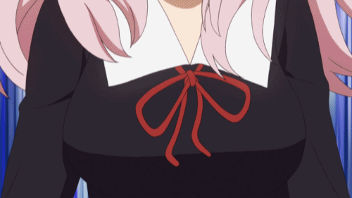
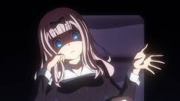

후지와라 치카
- 후지와라 치카에 대해 알아보자
- 치카 댄스에 대해 알아보자
- 치카의 유행어를 알아보자
- 성우에 대해 알아보자

1. 개요
카구야 님은 고백받고 싶어 ~천재들의 연애 두뇌전~의 주연.
2. 상세
[1]슈치인 학원 고등부 학생회의 서기. 2학년 B반. 16세 → 17세이다.
[1]동아리 활동은 테이블 게임부에 속해 있다
[1]오타쿠 문화에 관심이 있지만 게임기나 속된 오락을 금지당해 도피처를 찾은 결과,
독일계 아날로그 게임이나 퍼즐 같은 다소 메인스트림에서 벗어난 서브컬처 문화에 빠졌다고 한다.
[1]그 외에도 한국 문화를 좋아해서 한국 화장품이나 음식도 즐겨쓰고 먹는다고 한다.
[1]생일은 3월 3일, 혈액형은O형 이다.
2. 외모
카구야와 함께 작중 공식 미소녀로 아름답다는 평가를 받는데, 카구야와 달리 귀엽다는 소리를 자주 듣는다.
이는 치카를 은근슬쩍 라이벌로 보는 카구야나, 아예 여자 취급도 하지 않는 미유키 및 이시가미도 인정한 부분.
사실 작중 등장한 여캐들 대부분이 미소녀 설정이지만 유독 치카는 귀엽다는 부분이 자주 부각된다. 실제 외모나 하는 행동이 무척 귀엽기도 하고.
'라는 말을 하는 걸 보면 체감상E 이상인 건 확실한 듯하다.
공식 홈페이지에 공개된 Q&A에 따르면F컵이라고 한다.
3. 성격
존댓말 캐릭터이며 성격은 상냥하지만 자유분방하고 눈치가 없는 편이다.
시로가네 미유키와 시노미야 카구야 사이의 썸을 전혀 못 느끼고, 본의 아니게 둘 사이에서 훼방을 놓곤 한다
지루해질 수 있는 두 사람의 두뇌 싸움을 개판으로 만드는 주범이다.
번번이 예측 불가능한 행동을 하며 미친 존재감을 뿜어낸다.

4. 능력
어린 시절 피아노 관련으로 유명했던 신동.
하지만 작중 이이노 미코가 등장하기 전까지 치카를 아무도 유명인으로 대우해주지 않았기에
그녀가 등장하고 나자 기세 등등해 하면서 은퇴 이후로 옛날 있었지 정도의 취급이라며 넋두리를 늘어놓는다.
어느 정도냐 하면 교가 에피소드에서는 미유키의 과거 에피소드를 듣고 연민을 느껴 미유키를 철저하게 지도해줄 정도며,
소란부시 에피소드에서는 미유키에게 춤에 대한 교육을 역사, 유래부터 기초부터 철저히 지도해주지만,
그냥 체육대회에서 망신만 안 당하면 되는 것뿐이니 겉으로만 잘 보이면 되는 거 아니냐는
미유키의 말에 분노하여 춤 교습을 포기한답시고 자리를 박차고 나갈 정도다.
자세한 정보는 ( https://namu.wiki/w/%ED%9B%84%EC%A7%80%EC%99%80%EB%9D%BC%20%EC%B9%98%EC%B9%B4 )이사이트에 가서 보자